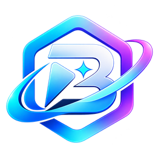

目录里应有 00_meta/meta.json。没有？勾选「新建工作区」让向导生成骨架。The folder should contain 00_meta/meta.json. Missing it? Tick “New workspace” and let the wizard create the skeleton.
检查 Python、元信息、引擎、规则层与写权限。警告项不阻断，错误项要修。Checks Python, metadata, engine, rules layers and write access. Warnings do not block; errors must be fixed.
三层按优先级合并：内核 > 默认 > 用户。用户层与内核层同编号时，该条会被拒绝并报告，不会静默覆盖。Three layers merge by priority: core > default > user. When the user layer shares an ID with the core layer, that row is rejected and reported, never silently overwritten.
会在 任务目录/ 下建目录，并生成一份符合规范的留档骨架。Creates a folder under tasks/ and a compliant archive skeleton.